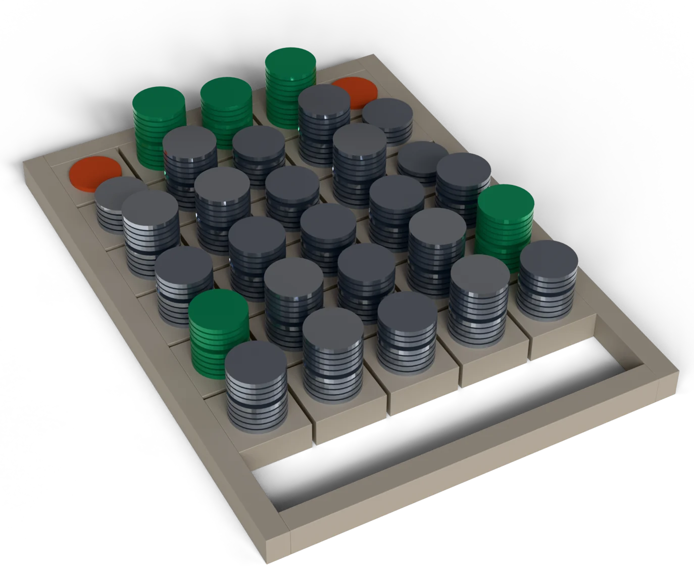

Both numbers are true. Only one leaves your desk.
Cost separates the two routings. Accuracy does not.
A blank gets read again. A wrong value gets filed.
Every count held across two passes. Every duration moved.
Every routing enumerated. One report you can argue with.




The dashboard mean.
On your desk: all five fields right on the same file, 92 of 120. Wilson 95%: 68.3 to 83.3.
The published routing.
The routing aimed at the file: no file gets worse, 3 gained, 0 lost. p = 0.25, accuracy undecided.
Every value delivered.
With silence, on the hard corpus: 33 of 53 right. 85 wrong removed, 12 right lost.
Every count, to the digit.
Every median duration moved. 32 conclusions retracted, 11 caught first.
Every combination of seven readers over five fields. Not a sample.
Held out and frozen; the tests run on your machine.
What this does not proveNeither number is wrong: they answer different questions, and only one of them is the question at your desk.Figure 1 — Five green cells mark the published routing, one per field.
What this does not proveThe sample decides cost, not accuracy: cheaper is decided, better is not — and both dollar figures rest on assumed prices.Figure 1 — One cell steps down: the name field moves from large to gen-4b. That is the only difference between the two routings.
What this does not proveWhere the break-even sits is your decision, not ours: we publish the curve, you place the point.Figure 1 — Where the rules reader returned 0%, it now returns nothing: the two red cells become gaps. Abstention, drawn.
What this does not proveRemoving a measurement is a discipline, not a guarantee about the figures we keep.Figure 1 — No cell is green: nothing here is held up as a result.
What this does not proveThe corpus here is synthetic: which is exactly why the real measurement runs on your records, on your machine.Figure 1 — Every cell is green: the full enumeration, one routing at a time.